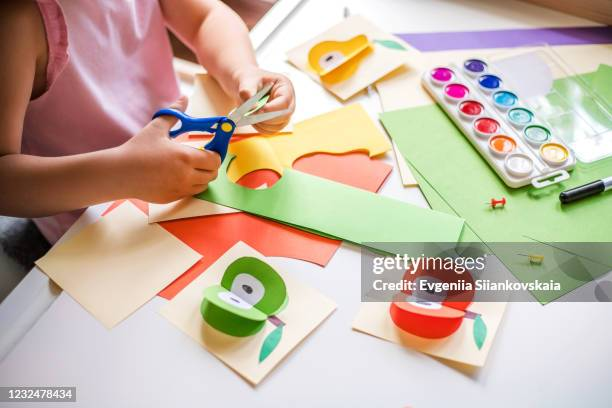

Travelling
Travelling is one of my favourite hobby. I like to go new places and meet new people. Travelling is an amazing way to learn a lot of things in life. A lot of people around the world travel every year to many places.Moreover, it is important to travel to humans. Some travel to learn more while some travel to take a break from their life.

Crafting
Crafting is a creative activity that involves making things by hand using various materials like paper, fabric, clay, or wood. It allows individuals to express their creativity, relax, and produce unique, personalized items. Whether it's knitting, painting, or woodworking, crafting can be both therapeutic and fulfilling, offering a sense of accomplishment and the joy of creating something from scratch. whenever i feel sad i used to make craft with papers. It refresh my mind.
